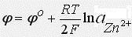
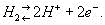
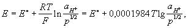

Окислительно-восстановительное равновесие. Электродные потенциалы. Электроды первого рода. Нормальный потенциал.Водородный электрод. Ряд напряжений.
Химические реакции, протекающие с изменением степени окисления элементов, входящих в состав реагирующих веществ, называются окислительно-восстановительными.
Окисление — это процесс отдачи электронов атомом, молекулой или ионом.
Восстановление — это процесс присоединения электронов атомом, молекулой или ионом. Окислителем является атом, молекула или ион, принимающий электроны. Восстановителем является атом, молекула или ион, отдающий электроны.
Окислитель в процессе реакции восстанавливается, восстановитель — окисляется.
Следует помнить, что рассмотрение окисления (восстановления) как процесса отдачи (и принятия) электронов атомами или ионами не всегда отражает истинное положение, так как во многих случаях происходит не полный перенос электронов, а только смещение электронного облака от одного атома к другому.
В электрохимии стандартный электродный потенциал, обозначаемый Eo, E0, или EO, является мерой индивидуального потенциала обратимого электрода (в равновесии) в стандартном состоянии, которое осуществляется в растворах при эффективной концентрации в 1 моль/кг и в газах при давлении в 1 атмосферу или 100 кПа (килопаскалей). Объёмы чаще всего взяты при 25 °C. Основой для электрохимической ячейки, такой как гальваническая ячейка всегда является окислительно-восстановительная реакция, которая может быть разбита на две полуреакции: окисление на аноде (потеря электрона) и восстановление на катоде (приобретение электрона). Электричество вырабатывается вследствие различия электростатического потенциала двух электродов. Эта разность потенциалов создаётся в результате различий индивидуальных потенциалов двух металлов электродов по отношению к электролиту.
Электродный потенциал не может быть получен эмпирически. Потенциал гальванической ячейки вытекает из "пары" электродов. Таким образом, невозможно определить величину для каждого электрода в паре, используя эмпирически полученный потенциал гальванической ячейки. Для этого установлен стандартный водородный электрод, для которого этот потенциал точно определён и равен 0,00 В, и любой электрод, для которого электронный потенциал ещё неизвестен, может быть соотнесён со стандартным водородным электродом с образованием гальванической ячейки - и в этом случае потенциал гальванической ячейки даёт потенциал неизвестного электрода.
Так как электродные потенциалы традиционно определяют как восстановительные потенциалы, знак окисляющегося металлического электрода должен быть изменён на противоположный при подсчёте общего потенциала ячейки. Также нужно иметь ввиду, что потенциалы не зависят от количества передаваемых электронов в полуреакциях (даже если оно различно), так как они рассчитаны на 1 моль переданных электронов. Отсюда при расчёте какого-либо электродного потенциала на основании двух других следует проявлять внимательность.
Электроды первого рода
Состоят из металла, погруженного в раствор, содержащий ионы этого металла. В этом случае электродный потенциал определяется концентрацией катионов металла и почти не зависит от концентрации анионов. В этом случае говорят, что электрод обратим относительно катиона. Например электрод, состоящий из цинковой пластинки схематично записывается так: Zn2+Zn, на нем протекает реакция :
Zn2+ + 2е = Zn
а потенциал записывается как:  К электродам первого рода относят амальгамные электроды, которые отлячаются тем, что вместо чистого металла используется раствор данного металла в ртути (амальгамма).
Нормальный потенциал, стандартный потенциал, физико-химическая величина, условно характеризующая равновесную разность потенциалов между электродом и раствором в том случае, когда вещества, участвующие в электродной реакции, находятся в стандартном состоянии, т. е. их активности (активные концентрации) равны 1. Поскольку фактическая разность потенциалов электрода и раствора недоступна измерению, пользуются величинами, характеризующими потенциалы различных электродов относительно некоторого электрода сравнения. Обычно электродом сравнения служит нормальный водородный электрод (Н. В. Э.), потенциал которого принимается равным нулю при любой температуре. Потенциал электрода, заряжающегося отрицательно относительно Н. В. Э., имеет знак минус, заряжающегося положительно — знак плюс. Совокупность Н. п. реакций разряда-ионизации металлов и водорода, расположенных в порядке их возрастания, называется рядом напряжений. Элементы с менее положительными Н. п. вытесняют элементы с более положительными Н. п. из раствора, содержащего их катионы. Н. п. вычисляют из результатов измерений эдс гальванических элементов, а также из стандартных значений изменения гиббсовой энергии (свободной энергии) DG° при реакции. Величины Н. п. могут быть использованы для вычислений DG° и констант равновесия химических реакций. Такие вычисления необходимы для оценки возможности протекания химических реакций и для термодинамических расчётов.
Водородный электрод
платиновая пластинка, электролитически покрытая платиновой чернью, погружённая в раствор кислоты с определённой концентрацией ионов водорода Н+ и омываемая током газообразного водорода. Потенциал В. э. возникает за счёт обратимо протекающей реакции  Между водородом, адсорбированным платиновой чернью, и ионами водорода в растворе устанавливается равновесие. Потенциал электрода Е определяется уравнением Нернста:  где Т — абсолютная температура (К), аН+ — активная концентрация ионов водорода (г-ион/л), р — давление водорода [кгс/см2 (атм)], Е° — нормальный (или стандартный) потенциал В. э. при р = 1 кгс/см2 (1 атм) и aH+ = 1. При любой заданной температуре Е° условно принято считать равным нулю. От потенциала стандартного В. э. отсчитывают потенциалы всех других электродов (так называемая водородная шкала потенциалов). При работе с В. э. необходима тщательная очистка водорода от примесей. Особенно опасны соединения серы и мышьяка, а также кислород, реагирующий с водородом на поверхности платины с образованием воды, что приводит к нарушению равновесия. В. э. применяют как электрод сравнения.
Ряд напряжений (реже — ряд активностей), последовательность расположения металлов и их ионов в порядке возрастания стандартных электродных потенциалов в растворах электролитов. Электродом сравнения обычно служит стандартный водородный электрод. Поэтому в Р. н. включают и водород, электродный потенциал которого принимается равным нулю.
Наибольшие отрицательные потенциалы характерны для щелочных металлов (около — 3 в), за ними следуют щёлочноземельные металлы и т. д.; наиболее положительные потенциалы имеют благородные металлы (около + 1,5 в; численные значения см. в ст. Металлы, табл. 2 и 3). В Р. н. часто включают неметаллы, ионы и некоторые химические соединения. Наиболее распространённые металлы расположены в Р. н. в следующей последовательности: Li, К, Ca, Na, Mg, Al, Mn, Zn, Fe, Co, Ni, Sn, Pb, H2, Cu, Hg, Ag, Au (см. там же).
Место каждого элемента в Р. н. несколько условно, так как величина электродного потенциала зависит от температуры и состава раствора, в который погружены электроды, в частности от активности (или концентрации) ионов данного вещества в электролите. Большое значение имеет состояние поверхности электрода (гладкая, шероховатая), в особенности наличие на ней окисной защитной плёнки (см. Пассивирование). Р. н., обычно, приводимый в учебной литературе, относится к водным растворам при температуре 25 °С, давлении газов 1 атм и при активности ионов, участвующих в электрохимической реакции, равной 1. При изменении концентраций и растворителя последовательность веществ в Р. н. может изменяться, особенно для веществ, близко расположенных в этом ряду.
Важнейшие следствия, вытекающие из Р. н. и широко используемые в химической практике: 1) каждый металл способен вытеснять (замещать) из растворов солей все другие металлы, стоящие в Р. н. правее данного металла; 2) все металлы, расположенные в Р. н. левее водорода, способны вытеснять его из кислот; 3) чем дальше расположены друг от друга два металла в Р. н., тем большее напряжение может давать построенный из них гальванический элемент. Р. н. составляется на основе термодинамических характеристик электрохимических процессов, поэтому он позволяет судить лишь о принципиальной возможности этих процессов; реальное же их осуществление во многом определяется кинетическими факторами.